Lab Layout:
VDI client machine: Windows 7 with PowerShell and PowerCLI
Passwords on lab items are generally "vmware#1". To be explicit:
This lab covers a wide range of PowerCLI topics. It starts out with some basic, introductory-level pieces, and then moves on to some discussions of more involved uses of PowerCLI. The lab uses PowerCLI to perform reporting and operations on vSphere inventory items. Launch the vSphere client, if desired, to get your bearings in the lab environment, and possibly to watch as things/actions are made to happen via PowerCLI.
Connect to the Windows 7 client machine
Launch PowerShell (Start button -> type "PowerShell" -> click "Windows PowerShell")
Maximize the PowerShell window vertically (double-click on the top or bottom window border, or drag one of these borders up/down respectively)
Add Main PowerCLI PSSnapin
In PowerShell, add the main VMware PowerCLI PSSnapin that provides all of the excellent VMware cmdlets that we will be covering:
Add-PSSnapin VMware.VimAutomation.Core
(copy this line and paste it into the PowerShell session, or type it there)
Get Connected to vCenter
Typically, one would use a domain account with vCenter permissions to connect to vCenter. In this lab, for the sake of keeping the environment small, we will be using an account local to the vCenter server. Create a PSCredential object with the vCenter administrator's credentials using the built-in PowerShell cmdlet Get-Credential (you will be prompted for password -- use the vCenter administrator account given at the start of this lab document):
$credVCAdmin = Get-Credential administrator
Connect to the vCenter server using these credentials via Connect-VIServer, and have the cmdlet save the credentials for subsequent connections to the vCenter (by specifying the -SaveCredentials parameter):
Connect-VIServer vCenter -SaveCredentials -Credential $credVCAdmin ## ignore self-signed cert message
This set of credentials for this vCenter server is now stored in the local VI credential store. You can display the contents of the credential store using:
Get-VICredentialStoreItem
Sample output:
Host User File
---- ---- ----
vCenter administrator
Subsequent connections to the given vCenter will use the credentials from the VI credential store (if no credentials are passed at connect time). You can test by disconnecting then reconnecting to the vCenter server:
Disconnect-VIServer -Confirm:$false ## disconnect from the vCenter server
Connect-VIServer vCenter ## reconnect, without explicitly passing non-current-user credentials
Handy. Sample output:
Name Port User
---- ---- ----
vCenter 443 administrator
An Informative PowerShell Window Title Bar
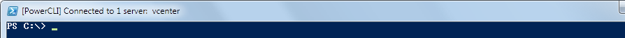
The 5.0.1 release of PowerCLI changed the behavior of Connect-VIServer / Disconnect-VIServer: no longer did these cmdlets update the title bar of the PowerShell / PowerCLI window to reflect the VI servers to which the PowerCLI session was connected. So, one could rely on the $global:DefaultVIServers variable to know to which VI servers the session is connected -- just echo out its value. Or, you can use a quick function to update the title bar (define this function in the current PowerShell session by pasting the below code into the session):
function Update-VNTitleBar() { ## written by AC at vNugglets.com
## check to see if there are any currently connected servers
if ($global:DefaultVIServers.Count -gt 0) {
## at least one connected server -- modify the window title variable accordingly
$strWindowTitle = "[PowerCLI] Connected to {0} server{1}: {2}" -f $global:DefaultVIServers.Count, `
$(if ($global:DefaultVIServers.Count -gt 1) {"s"}), (($global:DefaultVIServers | %{$_.Name}) -Join ", ")
} else {
## no connected servers, modify the window title variable to show "not connected"
$strWindowTitle = "[PowerCLI] Not Connected"
} ## end else
## change the window title
$host.ui.RawUI.WindowTitle = $strWindowTitle
} ## end fn
Then, just call the function to update the PowerShell window title bar:
Update-VNTitleBar
You should see the title bar change to display info about the current vCenter connection.
Another option is to create a couple more functions to use in place of Connect- / Disconnect-VIServer: one each that calls Connect- / Disconnect-VIServer with the given params and then calls the Update-TitleBar() function. For now, we will just inspect the $global:DefaultVIServers or call Update-VNTitleBar if question arises, and leave the simple wrapper function creation as an exercise for you at another time.
One of the many uses of PowerCLI is to gather info about inventory items in the virtual infrastructure. From VMs to VMHosts to Clusters to the vCenter service instance itself. This can be done using the standard cmdlets for each of these object types, like Get-VM or Get-VMHost. Another way is to use the Get-View cmdlet that deals with all sorts of inventory objects. While the Get-View route might become a bit more involved, it also allows for other gains, to be discussed later.
VM virtual hardware version
Let us start by getting some standard VM info, like the virtual hardware version:
## using Get-VM
Get-VM | Select-Object Name,Version
## using Get-View
Get-View -ViewType VirtualMachine -Property Name, Config.Version | Select Name,@{n="HdwVersion"; e={$_.Config.Version}}
Both should return a set of selected objects with VM name and the virtual hardware version. With the small size of the lab environment, the speed difference is not as pronounced, but Get-View is the winner. The Select-Object statement in the Get-View version uses a simple calculated property to access a sub-property and present it as a property of the returned objects.
Configured Guest OS Version
More than one way exists to get the guest OS information for a VM. A couple of ways: the VM configuration, as set at VM creation/clone time, and the actual guest OS info that is installed on the VM, which is reported per VMware Tools. The information about the configured guest OS is available in the .Config property of a VirtualMachine object. Tools-reported items about the guest are available in the .Guest property (but depend on VMware Tools to be running in each guest at the time of the query). Let us get the configured guest OS info for all VMs:
## using Get-VM
Get-VM | Select-Object Name, @{n="ConfigdGuestId"; e={$_.ExtensionData.Config.GuestId}}, @{n="ConfigdGuestFullName"; e={$_.ExtensionData.Config.GuestFullName}}
## using Get-View
Get-View -ViewType VirtualMachine -Property Name, Config.GuestId, Config.GuestFullName | Select Name, @{n="ConfigdGuestId"; e={$_.Config.GuestId}}, @{n="ConfigdGuestFullName"; e={$_.Config.GuestFullName}}
Here again, you see the use of calculated properties to access deeper properties of the given objects.
Comparing the results, you should see the same info, with the exception that the Get-View version has been written to include info about templates as well. Here the speed difference should be a bit more apparent, even in this small environment.
The .ExtensionData property discussion is later in the lab.
VMHost Versions
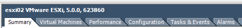
Need to know what ESXi version your VMHosts are running? How about:
## using Get-VM
Get-VMHost | Select Name, Version, Build
## using Get-View
Get-View -ViewType HostSystem -Property Name, Config.Product.Version, Config.Product.Build | Select Name, @{n="Version"; e={$_.Config.Product.Version}}, @{n="Build"; e={$_.Config.Product.Build}}
The output is the same between these two ways. The discussion about "why bother with Get-View" comes later in the lab.
Datastore Summaries
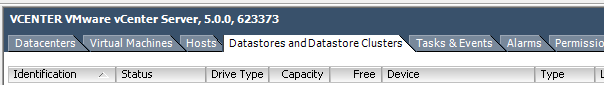
Now to get some summary information about datastores in the environment. Say, maybe some capacity/usage details, along with the filesystem version:
Get-Datastore | Select Name, FileSystemVersion, CapacityGB, FreeSpaceGB, @{n="UncommittedGB"; e={[Math]::Round($_.ExtensionData.Summary.Uncommitted / 1GB, 1)}}
The "UncommittedGB" calculated property gives the amount of storage that has been provisioned on the datastore and that has not yet been used or "committed" on that datastore. As in, the amount of thin-provisioned disk on the datastore that has not yet been used on the datastore.
VM Size info (Number of vCPUs, Memory, Used Space)
To get info about VMs and their configured resources, Get-VM returns objects with the right info needed. To do this for all VMs:
Get-VM | Select Name,NumCPU,MemoryMB,UsedSpaceGB
or, to get this info broken down by cluster:
Get-Cluster | Foreach-Object {$strClusterName = $_.Name; Get-VM -Location $_} | `
Select Name,NumCPU,MemoryMB,UsedSpaceGB,@{n="Cluster"; e={$strClusterName}}
The second way uses the -Location parameter to Get-VM to narrow the search scope to just the given vSphere container (a cluster in this example). Very helpful when looking to group items by inventory location, or to focus the search (though, there is only one cluster in our test environment here).
Pro Tip: And, you may notice these results being displayed in list format instead of table format. Not directly PowerCLI related, but to run a previous command in the PowerShell command history and pipe it to something else (say, to "Format-Table -AutoSize"), you can get the command ID of said previous command, then use it with Invoke-History. That is:
Get-History ## display the last x commands; then, make note of the command ID
This returns something like:
Id CommandLine
-- -----------
...
18 Get-VMHost | Select Name, Version, Build
19 Get-View -ViewType HostSystem -Property Name, Config.Product.Version, Config.Product
20 Get-Datastore | Select Name, FileSystemVersion, CapacityGB, FreeSpaceGB, @{n="Uncomm
21 Get-Cluster | %{$strClusterName = $_.Name; Get-VM -Location $_} | Select Name,NumCPU
22 Get-VM | Select Name,NumCPU,MemoryMB,UsedSpaceGB
23 Get-Cluster | Foreach-Object {$strClusterName = $_.Name; Get-VM -Location $_} | `...
Then, you can run the item with history ID 23 again, and pass its results to the pipeline like:
Invoke-History 23 | Format-Table -AutoSize ## where "23" is the ID of the command to run again
Try these, substituting the history ID value returned from Get-History that corresponds with the command to run again.
Information gathering with PoweCLI is great. But, we need to do something to inventory items with PowerCLI. Let us act on the inventory items -- not just report about them.
Create New Inventory Folder and Move VM Into It
## create the folder in the root VM inventory folder ("vm")
New-Folder -Location (Get-Folder vm) -Name TestFolder0
This creates a new VM inventory folder (a "blue" folder in the vSphere client). The default root VM inventory folder per datacenter is named "vm". By specifying this "vm" folder as the value for the -Location parameter (and since we are only dealing with one datacenter right now), New-Folder creates the new folder in this default root VM folder. You can see in the vSphere client the "Create folder" recent task, and if you switch to the "VMs and Templates" view (keyboard shortcut "CTRL + SHIFT + V" in the vSphere client), you see a new, empty folder named "TestFolder0". Now, to move some VMs:
## move a couple of VMs into this folder
Move-VM Win7*_empty -Destination (Get-Folder TestFolder0) -RunAsync
This second part uses the first positional parameter, which corresponds to -VM, to specify which VMs to move, a destination of the newly created folder, and runs asynchronously. This returns task info objects for each move task. The task of moving a VM to a new folder is pretty quick, but you can check task status using Get-Task. Viola! The command moved the targeted VMs to the destination inventory folder.
Create VMs From Template
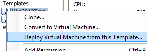
Time for several new VMs? Time for New-VM. A customer, Stymie, needs six (6) new Windows Server 2012 VMs. He provided a list of names for the new VMs:
Since there is a Windows Server 2012 template in the inventory, you can use the -Template parameter of New-VM. Using the list of VM names, use a Foreach-Object loop to call New-VM to deploy a new VM from the given template for each of the new VMs-to-be:
## create six new VMs by the given names from template
"dc01,dc02,app-srv-03,app-srv-04,webprint01,gtwy01".Split(",") | %{New-VM -Name $_ -Template Win2012Tmpl -Location OtherMachines -VMHost (Get-Cluster Lab | Get-VMHost | Get-Random) -DiskStorageFormat Thin -Description "for Stymie, ticket 332421" -RunAsync}
The comma-separated VM name string is split up into separate strings using the String class method Split(). The New-VM cmdlet then creates a new VM for each VM name, places them in the "OtherMachines" inventory folder, places them on random hosts in the given cluster, and lets the operations run asynchronously, so as to kick off all of the new VM creations at [about] the same time.
Alright, six new VMs, as requested. You can get their info with a:
Get-VM dc01,dc02,app-srv-03,app-srv-04,webprint01,gtwy01
Note: yes, these new VMs are still in need of having their OSes configured -- host name, static IP, etc. This can be handled via an OS Customization Spec -- just create one and specify it as a value to the -OSCustomizationSpec parameter of New-VM. As part of creating the OS Customization Spec, you can create/configure the OSCustomizationNicMapping portion, which handles the networking config of the new VM. That is something for the next PowerCLI lab.
Adjust VM Memory and vCPU
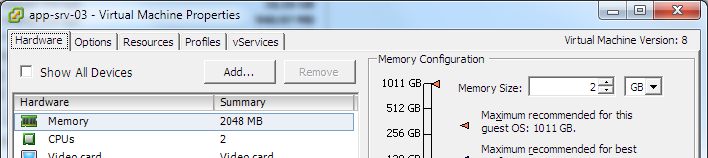
Woop -- Stymie put in another ticket (332422) to have the amount of memory and number of vCPUs changed on two of his new VMs -- the app servers. He wants just one (1) vCPU and six (6) GB of memory for each. After getting Stymie's cost center to agree to pay for the additional resources, time to Set-VM:
## adjust vCPU/memory on these VMs
Get-VM app-srv-0[34] | Set-VM -MemoryMB 6KB -NumCpu 1 -Confirm:$false
This command returns the info about the newly updated VMs.
Pro Tip: The "[34]" notation when specifying the VM names takes advantage of PowerShell wildcards, and equates to giving the names "app-srv-03" and "app-srv-04" to the Get-VM call (for more information about PowerShell wildcards, use "Get-Help -Full about_Wildcards"). The Set-VM call is using "6KB" for the value for the -MemoryMB parameter (which evaluates to 6144 so the VM has a nice, even 6GB of memory), and specifies $false for the -Confirm parameter, so that the action does not prompt for confirmation. The Set-VM cmdlet returns the VM objects, displaying their new sizes.
Add Disks to VMs
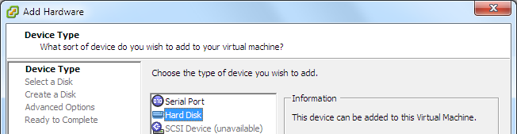
Stymie is at it again -- yet another ticket (332423), as he forgot that he needs an additional 10GB disk on each of the new VMs. "Hello? New-HardDisk? Yeah, we need some new hard disks..."
## add a new harddisk to each of these six VMs
Get-VM dc01,dc02,app-srv-03,app-srv-04,webprint01,gtwy01 | New-HardDisk -DiskType flat -CapacityKB 10MB -StorageFormat Thin -Confirm:$false
And, the output of the New-HardDisk cmdlet gives the info about the newly-created hard disks. That "10MB" value for the -CapacityKB parameter is just to save typing out "10485760" to get a 10GB disk.
Interact with Guest OS via VMware Tools
Invoke-VMScript allows one to run a script "in the guest OS of each of the specified virtual machines". It uses VMware Tools and the VIX API to do so. While this may not at first seem exciting, consider that this method of running scripts in the guest OS does not require that the VM be connected to the network to initiate the script. Say, for example, that a guest is up, but it seems that the networking may not have started up properly, and that you want to restart the network service on the guest.
## create credentials object for the guest OS
$credCentOsGuestCred = Get-Credential root
You will be prompted for the root credentials for this guest. Enter them (see top of this lab guide for passwords), and continue:
## run the script inside the guest OS of the VM
Invoke-VMScript -VM centos0 -ScriptText "/etc/init.d/network restart" -ScriptType bash `
-GuestCredential $credCentOsGuestCred
This runs the given script in the target VM, and returns the script results that are returned from the guest OS. The scripts can be of type PowerShell and Bat for Windows guests, and Bash for Linux-based guests.
Answer VMQuestions
On occasion, VMs get into a state where they have a VM question to be answered. Maybe a VM's files were copied from another location directly to a datastore, the new VM was registered with vSphere (added to inventory), and then powered on. The familiar, VMQuestion "This virtual machine might have been moved or copied" comes up at the VM’s first power-on:
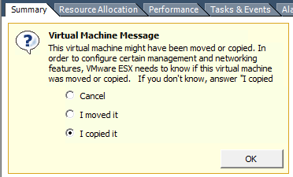
Another time this might happen is when a datastore fills up, and then VMs have a VMQuestion talking about, "There is no more space...". You can get these questions with Get-VMQuestion:
## get all VM questions asking about "moved/copied"
Get-VM | Get-VMQuestion -QuestionText "*have been moved or copied*"
And, set an answer for them:
## set the answer of "I copied it"
Get-VM | Get-VMQuestion -QuestionText "*have been moved or copied*" | Set-VMQuestion -Option "I copied it" -Confirm:$false
Or, for when a datastore was full and the VMs on it have the "no more space" question (Note: no VMs in this lab were put in a situation to have this question, so no demo / action is available for this scenario)
Get-VM -Datastore myDatastore0 | Get-VMQuestion -QuestionText "*There is no more space*" | Set-VMQuestion -Option "Retry" -Confirm:$false
Get/Start/Stop Services on VMHosts
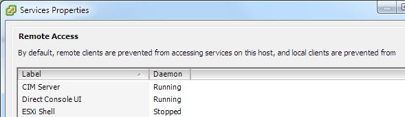
When it is time to act on services on VMHosts, one can get there with the vSphere Client in almost no time at all: VMHost -> Configuration Tab -> Security Profile item -> Properties of Services (pictured) -> Select service -> Options button -> Service commands. Per host. Hassleville, USA. Or, use Get-VMHostService.
The need has risen to SSH to a host and make some vmkfstools calls. To start up the "SSH" service (the remote Tech Support Mode):
Get-VMHost esxi01 | Get-VMHostService | ?{$_.Key -eq "TSM-SSH"} | Start-VMHostService -Confirm:$false
This uses a Where-Object clause (the ? is an alias for Where-Object) to just get the SSH service (with Key "TSM-SSH"), and then pass that service on through the pipeline to Start-VMHostService. You should see a "Start service" task in the vSphere client, or returned by a Get-Task call.
To visually verify that the service is now running:
Get-VMHost esxi01 | Get-VMHostService
The TSM-SSH service has a Running value of "true". The service is running and the SSH'ing can commence.
Then, when done with using SSH, to return the service to a Stopped state:
Get-VMHost esxi01 | Get-VMHostService | ?{$_.Key -eq "TSM-SSH"} | Stop-VMHostService -Confirm:$false
And, again, to visually verify that the service is now stopped:
Get-VMHost esxi01 | Get-VMHostService
Oh, and what if a teammate forgot to stop the TSM-SSH service after the last time they needed it, and the defined standard for the team is to have the service stopped in general? Just get all instances of the service that are running and stop them:
Get-VMHost | Get-VMHostService | ?{$_.Key -eq "TSM-SSH"} | ?{$_.Running} | Stop-VMHostService -Confirm:$false
(we did not leave any other such services running in this lab environment)
Changing VMHosts’ root Password
When the time comes to change the root password on VMHosts, the time is here to use Get- / Set-VMHostAccount.
## current root password, to be changed
$strOldRootPassword = "vmware#1"
## new root password to set
$strNewRootPassword = "vmware#2"
$arrHostsWithErrors = @() ## Create "error report" array
Get-VMHost | ForEach-Object {
$oConnectionTmp = Connect-VIServer -Server $_.Name -User root -Password $strOldRootPassword
$objVMHostAccount = $null
$objVMHostAccount = Set-VMHostAccount -Server $_.Name -UserAccount (Get-VMHostAccount -Server $_.Name -User root) -Password $strNewRootPassword
if (($objVMHostAccount -eq $null) -or ($objVMHostAccount.GetType().Name -ne "HostUserAccountImpl")) {$arrHostsWithErrors += $_.Name}
Disconnect-VIServer -Server $_.Name -Confirm:$false
} ## end foreach-object
This gets all VMHost using the existing VI Server connection to the vCenter server, and then for each one:
You can verify that you can connect to one of the VMHosts with the new password:
Connect-VIServer esxi01
This should prompt for credentials -- enter "root" and the new password set in the previous step. Once connected, you can display the value for the automatic variable "$global:DefaultVIServers", or update the PowerShell window's title bar by calling the function "Update-VNTitleBar", as defined at the start of the lab.
Then, disconnect the direct host connection:
Disconnect-VIServer esxi01 -Confirm:$false
Update-VNTitleBar ## update the title bar to show the currently connected VI server info
Get/Set Advanced VMHost Settings
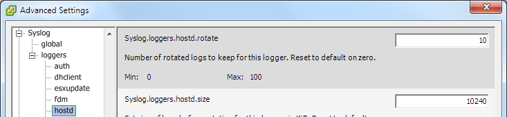
Current versions of VMHosts have quite a few advanced configuration items that can be set -- about 850-880 right now. The use of these configuration items might be, say, to tweak an installation, or to be used when advised by VMware Support so as to work around an issue. We need, for example, to set the number of rotated logs kept for “hostd” to 21, per our standard.
First, to get the current values:
## get the advanced settings for hostd syslog logger
Get-VMHost | %{$strVMHostName = $_.Name; Get-VMHostAdvancedConfiguration -VMHost $strVMHostName -Name Syslog.loggers.hostd.rotate} | Select @{n="VMHost"; e={$strVMHostName}}, @{n="SyslogHostdRotate"; e={$_["Syslog.loggers.hostd.rotate"]}}
This displays the current value for the "Syslog.loggers.hostd.rotate" advanced host setting. Ok -- now to set the values to the desired "21":
Get-VMHost | Set-VMHostAdvancedConfiguration -Name Syslog.loggers.hostd.rotate -Value 21
The updated configuration values are returned upon success. You will notice the "Update option values" tasks in Recent Tasks in the vSphere client, or the "UpdateOptions" tasks returned from Get-Task. Note: one can also update multiple advanced configuration settings by passing a hashtable of name/value pairs to update to the Set-VMHostAdvancedConfiguration cmdlet using the -NameValue parameter.
Now, to display the updated (current) values per the hosts, run the first snippet of code. All changed!
Get/Set VM ExtraConfig Settings
There are those sometimes handy, sometimes necessary Configuration Parameters available on VMs.
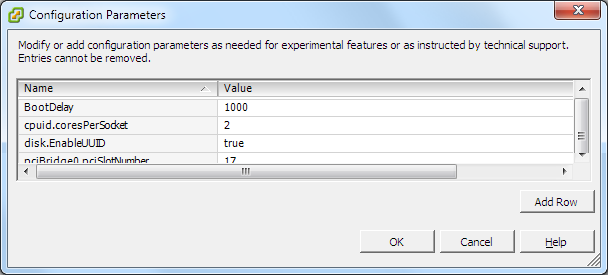
On occasion, an admin might come across a seemingly juicy config parameter, or VMware support requests the addition of a parameter. Or, the VM owners want copy/paste access from the MKS console screen. But, "starting with vSphere 4.1, the Copy and Paste options are, by default, disabled for security reasons". Hmm.
Well, we talked to InfoSec, and they gave us the go ahead on enabling copy/paste via guest consoles. But, now we have x-thousand VMs to configure this, and it is one of these handy configuration parameters. Better have a look at the API / interweb, and see how to reconfigure a VM with the desired configuration parameters.
Looks like a couple of configuration parameters are involved: "isolation.tools.copy.enable" and "isolation.tools.paste.enable". Ah, here we are:
## set copy/paste Isolation values for a VM; change requires VM power-cycle to take effect
## initially based on code at http://poshcode.org/1475
$strVMName = "web-srv-02" ## VM to config
## key that enables/disables copy-to-clipboard
$strCopyEnable_key = "isolation.tools.copy.enable"
## key that enables/disables paste-from-clipboard
$strPasteEnable_key = "isolation.tools.paste.enable"
## string value (not boolean) for enabling/disabling copy/paste (doing both as same here)
$strCopyPasteEnable_value = "true"
## get the .NET View object for the VM
$viewVMToReconfig = Get-View -Property Name, Config.ExtraConfig -ViewType VirtualMachine -Filter @{"Name" = $strVMName}
## check the current values for the isolation settings
$viewVMToReconfig.Config.ExtraConfig | ?{$_.Key -like "*isolation*"}
This should have returned the current values for those two config items (or no return at all, if the values are not set, and the defaults are in effect).
Well, let's go ahead and set those values to "true":
## setup the VirtualMachineConfigSpec object
$oVMConfigSpec = New-Object VMware.Vim.VirtualMachineConfigSpec
$strCopyEnable_key,$strPasteEnable_key | %{ ## create a couple new OptionValue objects in the configSpec ExtraConfig
$oVMConfigSpec.ExtraConfig += New-Object VMware.Vim.OptionValue -Property @{"key" = $_; "value" = $strCopyPasteEnable_value}
} ## end foreach-object
## reconfig the VM w/ the new config
$viewVMToReconfig.ReconfigVM($oVMConfigSpec) ## synchronously
This utilizes the ReconfigVM() method of a VirtualMachine .NET View object. It first creates a VirtualMachineConfigSpec object, used as an argument to said method, and then sets a couple of OptionValue objects for the ExtraConfig property of the configspec. Then, time to ReconfigVM(). Afterwards, the two lines below update the given property of the .NET View object, and then writes out the new current values:
## update the .NET View data, then display the new values added
$viewVMToReconfig.UpdateViewData("Config.ExtraConfig")
$viewVMToReconfig.Config.ExtraConfig | ?{$_.Key -like "*isolation*"}
Looks like this machine is ready for copying and pasting! Well, almost -- these changes, which become .vmx file entries, still require a power-cycle of the VM to take effect. Boo for that, but hopefully that changes in the future.
The .NET View object and the Get-View cmdlet are discussed further a bit later.
In the first section about Info Gathering above, the reporting was generally for all items in the vCenter inventory. There are times to focus in on particular subsets of items based on their inventory location, or based on given properties/attributes. Besides using parameters like -Location and -SearchRoot when available on cmdlets, using Where-Object is a great way to focus in on particular items. For example, VMs with a given version of VMware Tools, or VMs with Tools that are installed but not running, or only VMHosts whose build number are less than a given level. Now for some exercises in getting more refined results.
Get VMs on Older Virtual Hardware
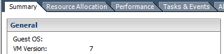
Initech support teams are ready to update the virtual hardware on their VMs, but want info about which ones need it, so as to open their detailed change management tickets.
## get all VMs and their hardware version, as before
Get-VM | Select Name,Version
## just get VMs whose hardware version are not "v8"
Get-VM | Where-Object {$_.Version -ne "v8"} | Select Name,Version
The previous two items gets the info about VMs in inventory.
## get info about VMs _and_ templates with older vHardware
Get-View -ViewType VirtualMachine -Property Name, Config.Version | Select Name,@{n="HdwVersion"; e={$_.Config.Version}} | Where-Object {$_.HdwVersion -ne "vmx-08"}
This third snippet includes templates as written, which is handy for letting the support teams know about the older templates as well.
Get VMs with Installed Tools Not Running
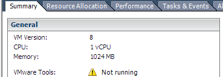
Commonly, people want to get the Tools status for VMs.
## get VMs and their Tools status
Get-VM | Select Name, @{n="ToolsRunningStatus"; e={$_.ExtensionData.Guest.ToolsStatus}}
But, the current task force is focused on just powered-on VMs with Tools not installed. Get that info for them:
## get VMs that are powered on whose Tools status is of "toolsNotInstalled"
Get-VM | ?{$_.PowerState -eq "PoweredOn"} | Select Name, PowerState, @{n="ToolsRunningStatus"; e={$_.ExtensionData.Guest.ToolsStatus}} | ?{$_.ToolsRunningStatus -eq "toolsNotInstalled"}
The .ToolsStatus property can be a value in the VMware.Vim.VirtualMachineToolsStatus enumeration: toolsNotInstalled, toolsNotRunning, toolsOk, toolsOld. So, the value of "toolsNotInstalled" -- pretty clear. The Where-Object at the end of the statement gets only VMs with Tools not installed.
Aside: the "ToolsStatus" property has been deprecated, and will go away in some future version of the API. VMware advises people to use the properties toolsVersionStatus2 and toolsRunningStatus for vSphere version 5 environments. But, the toolsVersionStatus2 property is only available in version 5, so using ToolsStatus for existing/remaining version 4 environments is the way to go.
ExtensionData, Get-View
Now for the aforementioned discussion of the .ExtensionData property of objects that standard PowerCLI cmdlets return, and the relationship to objects that Get-View returns. The .ExtensionData property gives access to the vCenter server-side object (the .NET View object on which actions are taken by the vSphere API). The .NET View object is the inventory object, instead of just an object returned to a PowerShell session with some information about the inventory object. This .NET View object is what the PowerCLI cmdlet Get-View returns. It is far more rich than the PowerShell/PowerCLI object returned by the other standard PowerCLI cmdlets (Get-VM, Get-VMHost, Get-Datastore, etc.).
Get-View returns the .NET View objects for hosts (of type "VMware.Vim.HostSystem"), VMs ("VMware.Vim.VirtualMachine"), datastores ("VMware.Vim.Datastore"), and so on. It is also used when needing to do other, advanced things, like deal with vCenter sessions, a license manager, alarm and event managers, and the like.
To illustrate the relationship between the .ExtensionData property of the "VirtualMachineImpl" object that Get-VM returns and the whole "VMware.Vim.VirtualMachine" object returned by Get-View, consider getting Tools status, once again:
## Get-VM way from previous example
Get-VM | Select Name, @{n="ToolsRunningStatus"; e={$_.ExtensionData.Guest.ToolsStatus}}
## Get-View way
Get-View -ViewType VirtualMachine | Select Name, @{n="ToolsRunningStatus"; e={$_.Guest.ToolsStatus}}
Notice the first way has to access the .NET View object via the .ExtensionData property, whereas the second way already has the .NET View object, so the calculated property in the Select-Object statement just accesses the .Guest.ToolsStatus property directly.
While this can provide extra confusion, and can cause the code to be a bit (or considerably) more complex, it also opens many possibilities (optimizations / speed / depth of data / API-based operations). You probably noticed the speed difference (if not, check again). Now imagine if the environment contained a few hundred or thousand VMs.
VM Counts by OS Version
On the occasion that someone asks for a list of VM counts tallied by guest OS version, the standard PowerShell cmdlet Group-Object comes in quite handy. One could export all guest OS info to a spreadsheet and use another program to total up the counts, or do some additional coding to make a data structure to hold counts of OS versions, but Group-Object makes this a simple task:
## get VM counts by configured OS version
Get-VM | Select-Object @{n="ConfigdGuestFullName"; e={$_.ExtensionData.Config.GuestFullName}} | Group-Object -NoElement ConfigdGuestFullName | Sort-Object Name | Format-Table -AutoSize
## get the same info, but via Get-View
Get-View -ViewType VirtualMachine -Property Config.GuestFullName -Filter @{"Config.Template" = "false"} | Select-Object @{n="ConfigdGuestFullName"; e={$_.Config.GuestFullName}} | Group-Object -NoElement ConfigdGuestFullName | Sort-Object Name | Format-Table -AutoSize
Another example of using Get-VM vs. Get-View. The second way is a bit more lengthy. Both ways return the same info. But the Get-View way is faster -- about seven (7) times faster, even in this small environment!
Along with Group-Object, these use Sort-Object to -- you guessed it -- sort the objects returned. It also uses Format-Table with the -AutoSize parameter so as to not truncate any column info returned. Most often, dealing with / returning just objects helps facilitate further manipulation of the objects as the need arises (instead of having a formatted table of strings with which no more exciting pipeline activities will take place), but Format-Table does have its place.
Find VM by NIC MAC Address
Say, now, that the InfoSec department has determined that a machine is sending malicious traffic, and they have gotten with the Networking crew to find out the source MAC address of the devious machine. Next stop: the virtualization team's area to find out what VM has a NIC with that MAC address.
A VirtualMachine .NET View object has the VM's info, including info about the VM's configured virtual hardware devices--SCSI controllers, NICs, virtual disks, VM Video Cards, network adapters, etc. So, in this instance, it is just a matter of filtering all VMs' virtual NICs to find the machine with the NIC with the given MAC address.
The VirtualMachine object holds the virtual hardware device info at .Config.Hardware.Device. By checking these devices that are of type VirtualEthernetCard and that have a value for the "MacAddress" property that matches the one from InfoSec, the VM is found:
## find VM by MAC addr -- as discussed by Matt at vNugglets.com
$strMacToFind = "00:50:56:36:66:F9"
## return the .NET View object(s) for the VM(s) with the NIC w/ the given MAC
Get-View -Viewtype VirtualMachine -Property Name, Config.Hardware.Device | `
?{$_.Config.Hardware.Device | ?{($_ -is [VMware.Vim.VirtualEthernetCard]) `
-and ($_.MacAddress -eq $strMacToFind)}}
## or, just some summary info about the VM: VM name and MAC address(es)
$strMacToFind = "00:50:56:36:66:F9"
Get-View -Viewtype VirtualMachine -Property Name, Config.Hardware.Device | ?{$_.Config.Hardware.Device | `
?{($_ -is [VMware.Vim.VirtualEthernetCard]) -and ($_.MacAddress -eq $strMacToFind)}} | `
Select name, @{n="MAC(s)"; e={($_.Config.Hardware.Device | ?{($_ -is [VMware.Vim.VirtualEthernetCard])} | %{$_.MacAddress}) -join ","}}
Both items above use the .Config.Hardware.Device property of the VirtualMachine .NET View objects and then a Where-Object clause to get just the VirtualEthernetCard devices, and such devices whose MacAddress property matches the address in question. The first portion returns the .NET View object of the virtual machine(s) with the given MAC address. The second part employs a Select-Object statement to return just the VM name(s) and the corresponding MAC addresses. Here you go, InfoSec, the machine with that MAC address -- now go get 'em.
Duplicate MAC Address -- Find the VMs
Sometimes the ol' duplicate MAC address problem rears its head, whether a VM was brought in from another environment and just happened to have a MAC address that matched that of a VM in the new environment, or someone manually set a NIC's MAC address without verifying its uniqueness. However it happened, networking does not like it. So, let us check all MAC addresses on VMs' NICs in the environment, and see if we have any duplicates.
## find VMs that correspond to duplicate MAC addresses -- as discussed by Matt at vNugglets.com
## create a collection of custom PSObjects with VM/MACAddress info
$colDevMacAddrInfo = `
Get-View -ViewType VirtualMachine -Property Name,Config.Hardware.Device -Filter @{"Config.Template" = "False"} | %{
$strVMName = $_.Name
$_.Config.Hardware.Device | Where-Object {$_ -is [VMware.Vim.VirtualEthernetCard]} | %{
New-Object -Type PSObject -Property @{VMName = $strVMName; MacAddr = $_.MacAddress}
} ## end foreach-object
} ## end foreach-object
## check if all of the MAC addresses are unique? (returns true/false)
($colDevMacAddrInfo | Select-Object -unique MacAddr).Count -eq $colDevMacAddrInfo.Count
## get the non-unique MAC addresses, returning objects with the count of the duplicates, the duplicate MAC, and the VM names that have the duplicate MAC
$colDevMacAddrInfo | Group-Object MacAddr | Where-Object {$_.count -gt 1} | Select-Object Count,@{n="DuplicateMAC"; e={$_.Name}},@{n="VMNames"; e={($_.Group | %{$_.VMName}) -join ","}}
In a fashion similar to the Find VM by NIC MAC Address task above, we get the VMs' NICs' MAC addresses. This time, we store that info in a custom PSObject (as created by New-Object). Then, utilizing the -Unique parameter to Select-Object, we can find if the number of unique MAC addresses matches the total number of MAC addresses. If so, no duplicates.
If not, the last portion employs Group-Object and a Where-Object statement to find MAC addresses that occur more than one time. It should list out any VMs that share a duplicate MAC address, along with the MAC address. It is just that easy -- and pretty quick, too.
Find a VM When vCenter is Down
Sometimes, vCenter goes down. Whether the OS fails, or some vCenter service or a dependent service is stopped, it can make standard operations a bit of a hassle. Consider an instance when someone needs to get on the console of a particular VM for troubleshooting, but since vCenter is down, the identity of the VMHost on which said VM resides is unknown.
Well, since the names of the VMHosts are generally known (people tend to keep an inventory of some sort -- in a DB or a spreadsheet or a txt file -- something), and PowerCLI can connect to multiple VI servers at one, finding a VM's whereabouts without vCenter is almost trivial. It is just a matter of connecting to all VMHosts directly with Connect-VIServer, and then finding the desired VM:
## disconnect from vCenter server "vcenter", as it is supposedly down for this example
Disconnect-VIServer * -Confirm:$false
## make sure the PowerCLI config is set to connect to multiple VI Servers
Set-PowerCLIConfiguration -DefaultVIServerMode Multiple -Confirm:$false
## get credentials for hosts (assumes common creds)
$credVMHostRoot = Get-Credential root ## prompts for password
Enter the VMHost root password (that was CHANGED in prior exercise of setting VMHost passwords -- use the new password) when prompted, then:
## make array VMHost names; could be from txt file or some other "data source"
$arrVMHostNames = "esxi01","esxi02"
## connect to all of the hosts
Connect-VIServer -Server $arrVMHostNames -Credential $credVMHostRoot
## update the PowerShell window title bar to show all connected VMHost names
Update-VNTitleBar
## get the VM and display its name and the VMHost on which it resides
Get-VM centos0 | select Name, VMHost
This takes the manually-defined array of the two ESXi hosts in this lab environment, connects to both, does a Get-VM for the given VM, and displays the VMHost info for the VM. Usually an environment would have more VMHosts, and so the array of hosts would likely be made by using Import-Csv to read in from a CSV or Get-Content to get a list of VMHost names from a txt file.
At this point, someone with rights can connect directly to the given VMHost with the vSphere client and launch the MKS console so that anxious customer Bobby can connect and take actions on his VM. This example is also helpful for a situation where the vCenter VM is on the same infrastructure that it manages. Admins need to know on what host the failed vCenter server is running so as to get to it, troubleshoot/fix it, and get it back in working order (if a virtualization team was so inclined to run their vCenter server in this manner).
That is the last exercise in this lab, you made it.
Easy PowerCLI Optimization
You may have noticed that the first call to retrieve info/objects after Connect-VIServer takes a fair amount longer than subsequent calls. For example, the first Get-VMHost call can take five- to ten times as long as subsequent calls with the same cmdlet. This has to do with "the fact that the .NET framework compiles the underlying code on first use".
The official PowerCLI blog (http://blogs.vmware.com/vipowershell/) has a post about this, with the way to take care of the first-call slowness (involving some simple commands to pre-compile some of said code). Several other posts exist, such as the first follow-up post that is found at http://vnugglets.com/2011/11/speed-up-first-powercli-5-cmdlet.html. Every time you are in a fresh new PowerCLI session, you will be glad that you took the time to follow the easy steps discussed in these posts.
PowerCLI Inventory and Datastore Providers, and PSDrives
PowerCLI has a couple of "providers" for accessing inventory items and datastore items. From the Windows PowerShell help for Get-PSProvider, "Windows PowerShell providers let you access a variety of data stores as though they were file system drives. For information about Windows PowerShell providers, see about_Providers."
The VMware vSphere PowerCLI User's Guide, vSphere PowerCLI 5.0.1 (available at vmware.com, and installed locally by default with PowerCLI) discusses these providers on pages 12-13. When you connect to a VI server with Connect-VIServer, the cmdlet builds four (4) PSDrives. It makes two default inventory PSDrives, "vis:\" and "vi:\", and it makes two default datastore drives, "vmstores:\" and "vmstore:\".
The singular-named PSDrives here correspond to the inventory and datastores of the last-connected VI server, and the plural-named PSDrives (vis:\, vmstores:\) correspond to the inventory and datastores of all connected VI servers in the current PowerCLI session. These can be handy for searching datastores for files, copying items from datastores to disk local to the PowerCLI session and vice versa (via Copy-DatastoreItem), acting on inventory items based on their inventory "location" on the PSDrive, and so on.
To see these PSDrives, you can issue a standard PowerShell Get-PSDrive call. And, to traverse them, you can "cd" ("Set-Location") right into them, get directory listings, etc. Experimenting with these PSDrives will help grow your understanding of their uses.
Resource/Speed Considerations
As witnessed by the countless versions of PowerShell scripts available on the web to do given tasks, many ways exist to achieve a goal. Not all of them, however, get to that goal at the same rate. A few considerations for maximizing speed and minimizing resource consumption by scripts:
Many other optimization/speed tips exist on the web, but one of the main things is to be mindful of the speed of the code as you write it!
Code Editing, Script Debugging
Notepad to write your PowerShell code? It will get the job done. But, many editors are available that offer syntax highlighting, from free ones like Notepad++ to inexpensive ones like Textpad, and on to more expensive editing applications. This feature helps with code legibility through the use of colors and whatnot (which might seem "frilly" if you have not used it), but this greatly increases productivity.
And, there are debuggers available, like the free PowerShell ISE that [generally] comes installed with PowerShell (depending on your OS), and the free-and-powerful PowerGUI Script Editor from Quest (at powergui.org), and the for-purchase Sapien PrimalScript. If you have not dealt with a debugger -- it allows you to inspect code, variables, output, etc., and to pause code execution and walk through it step-by-step. A debugger is invaluable as you take on new coding challenges, dig deeper into objects, follow execution flow, and so on.
Echoing out variable values every-so-often can do for quick and dirty manual debugging, but when you get into a serious scripting situation, reach for a debugger.
Credits / Sources
For building the lab environment you have Brian Wuchner to thank. He built the infrastructure, the client piece (VMware View-based), and the initial version of the vApps used as the basis of the individual lab environments.
Some of the code snippets here cite their source, like poshcode.org and vNugglets.com. Most other snippets are from the archives and depths of the experiences of the vNugglets.com authors, Allen and Matt, who created this PowerCLI lab.